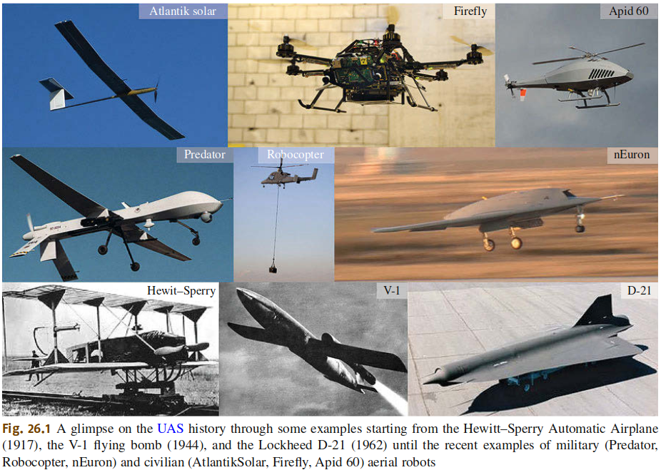
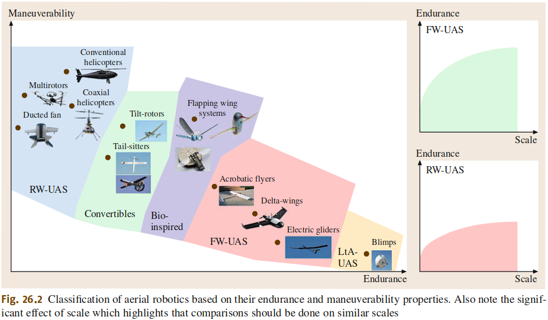
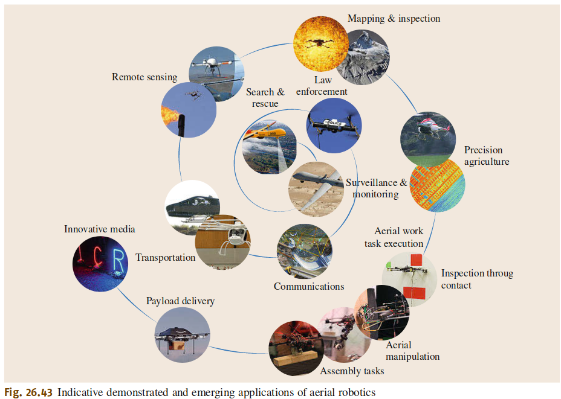
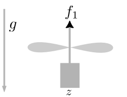
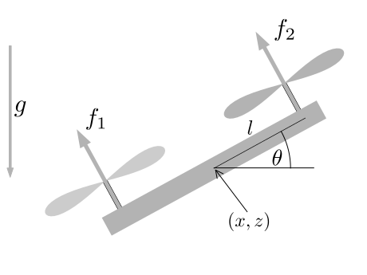

Robotic Systems and Flight Dynamics
Wolfgang Hönig
October 18, 2024
“an aircraft which is designed or modified, not to carry a human pilot and is operated through electronic input initiated by the flight controller or by an onboard autonomous flight management control system that does not require flight controller intervention” [American Institute of Aeronautics and Astronautics (AIAA)]





\[ \begin{align} \mathbf{\dot x} = f(\mathbf x, \mathbf u) = \begin{pmatrix} \dot x\\ \frac{-(f_1 + f_2) \sin \theta}{m}\\ \dot z\\ \frac{(f_1 + f_2) \cos \theta}{m} - g\\ \dot \theta\\ \frac{(f_2 - f_1) l}{\mathbf J_{yy}} \end{pmatrix} \end{align} \]
?